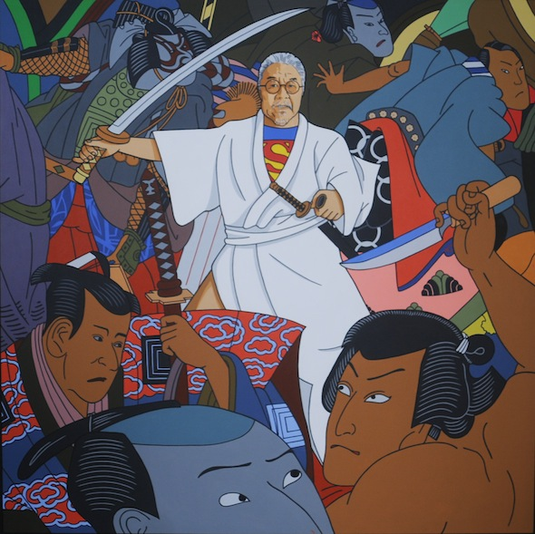
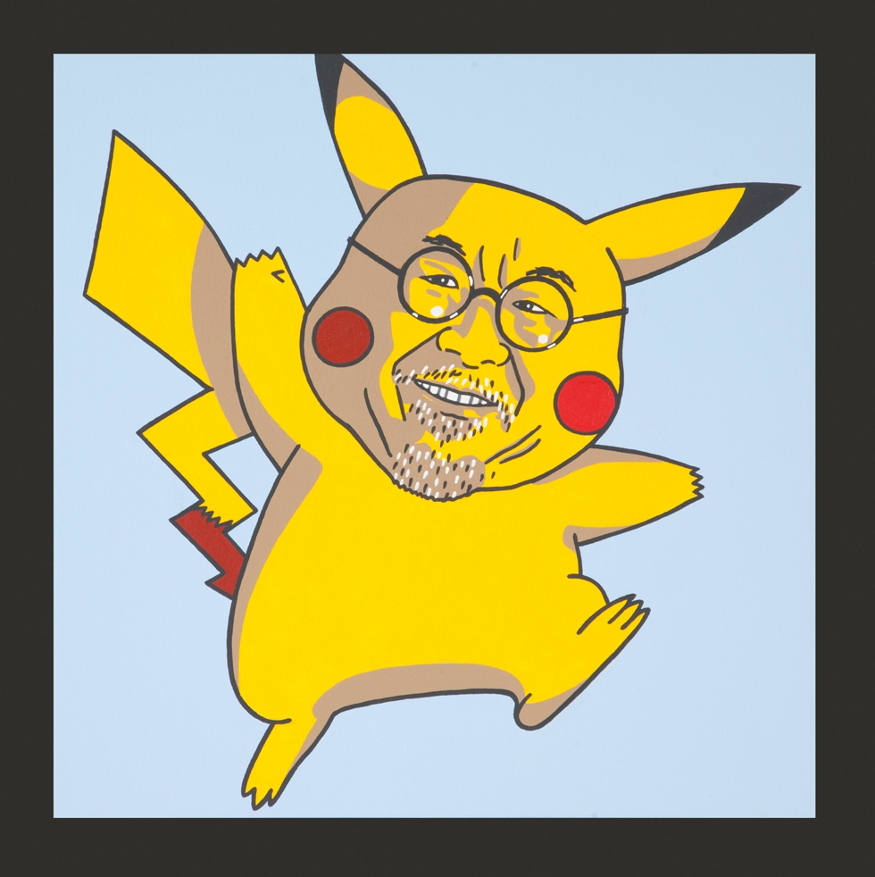
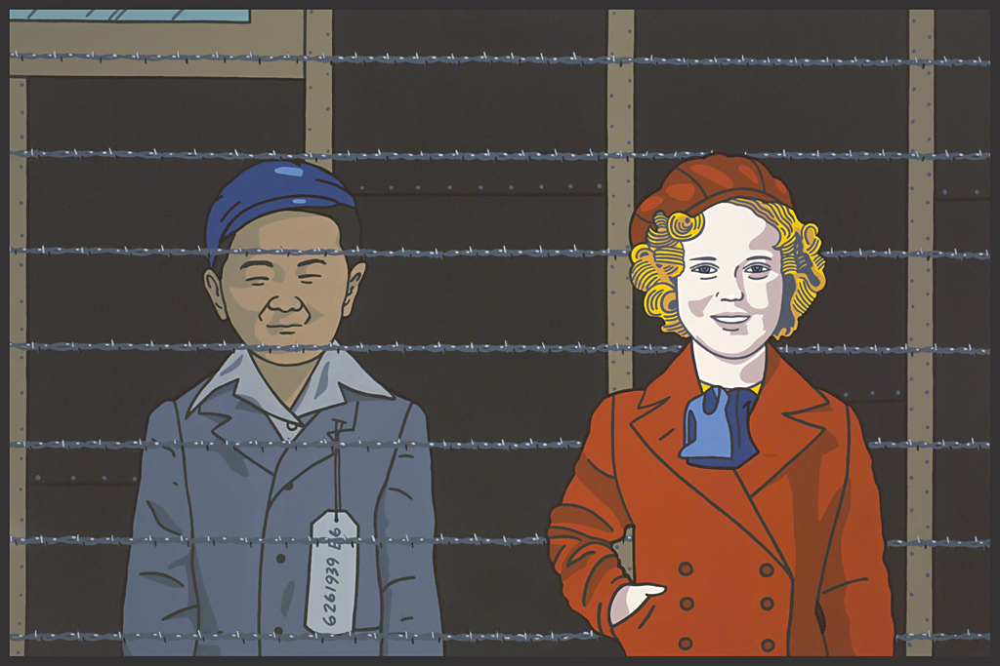

Welcome
This website showcases five works by Roger Shimomura that explore racism, cultural identity, stereotyping, and the Japanese-American experience. Use the navigation above to jump to each piece.
American vs Japanese 3
This painting depicts Shimomura as Superman, fighting off stereotypical Japanese men using a samurai sword. Despite the fact that Shimomura is old, he still fights off Japanese stereotypes to this day, highlighting the amount of racism he has experienced during the 86 years he has lived in America. This painting shows that even American-born Japanese-Americans experience an unhealthy amount of racism and speaks out against racism.
American Pikachu
This painting depicts Pikachu with Shimomura's face replacing Pikachu's. Pokémon were and still are very popular among American children. This painting represents the idea that when people look at Asian-Americans, they tend to think about the pop culture things related to their race while ignoring their actual identities. Shimomura shows that Asian-Americans are not only tied to the pop culture of their race but also have complex identities of their own.
Classmates
The painting depicts a Japanese-American child behind barbed wire in an internment camp with an American child visiting him. The painting's name implies that the children were former classmates but the Japanese-American kid was imprisoned after the bombing of Pearl Harbor. This painting brings more attention to the atrocities committed against Japanese-Americans during WWII and makes sure that their story is never forgotten.
American vs Japanese 2

This painting depicts Shimomura fighting off Japanese bucktoothed caricatures using karate. These caricatures were commonly used in WWII propaganda. Shimomura attempts to fight off these stereotypes previously imposed by the United States that other him from other Americans. He is standing up for all Japanese-Americans for their recognition as true Americans and not a separate group.
Mickey

This woodblock print shows a man from the Japanese Edo period (1603–1868) looking into a mirror which reflects back Mickey Mouse, a prominent figure in American culture. The subject is torn between their cultural identity and forced assimilation into a primarily white American society. This print represents Japanese-Americans and the pressure they have to assimilate into American society, which can be thought of as a double-consciousness. Shimomura brings this perspective into the spotlight and resists silence of those oppressed.